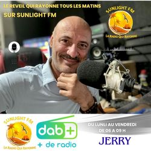
Lun — Ven · 6h — 9h
Le Réveil qui rayonne avec Jerry
Commencez votre journée avec énergie ! Jerry vous réveille chaque matin avec la bonne humeur, la musique et l'actu locale.
Sunlight FM, la radio DAB+ qui illumine le Grand Sud, l'Ouest et le Nord de La Réunion. Émissions variées, invités exclusifs, musique locale et nationale — connectez-vous et rayonnez avec nous.
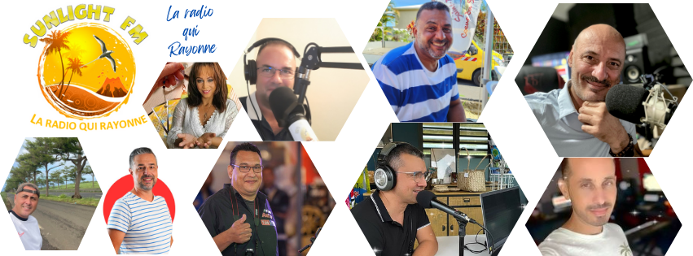
Profitez de notre diffusion en DAB+ sur 95.5 FM à Saint-Philippe, 105.2 FM au Tremblet, 92.3 FM à Saint-Joseph et Petite Île. Suivez-nous également via notre player en ligne, disponible sur tous vos appareils.
Découvrez nos émissions phares comme MémoireSport avec Guillaume Baret, du lundi au dimanche à 11h30, ainsi que nos invités exclusifs qui animent la radio au quotidien.

Commencez votre journée avec énergie ! Jerry vous réveille chaque matin avec la bonne humeur, la musique et l'actu locale.
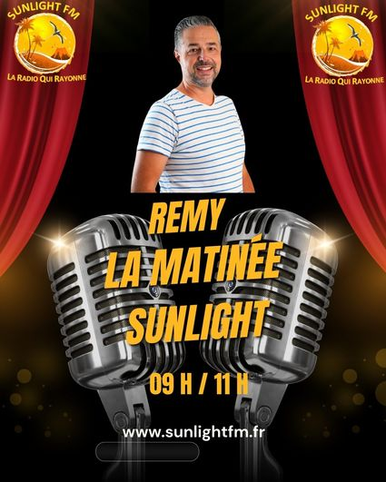
La matinée continue avec Rémy, votre animateur pour deux heures de bonne musique et de convivialité.
Chaque jour à 11h30, Guillaume Baret vous replonge dans les grands moments sportifs qui ont marqué l'histoire.
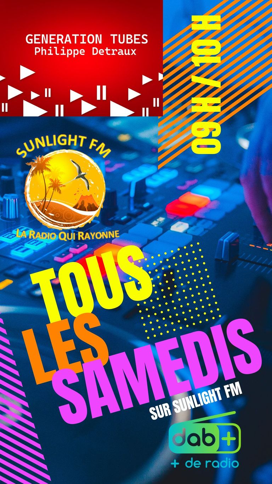
Les plus grands tubes de toutes les générations ! Nostalgie et hits incontournables pour animer vos matinées.
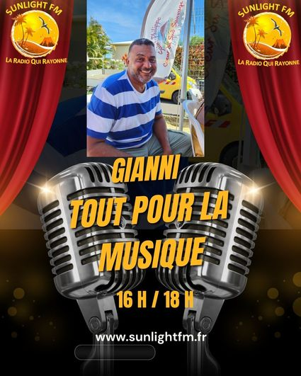
Gianni vous fait découvrir la musique sous toutes ses formes : nouveautés, artistes locaux et coups de cœur.
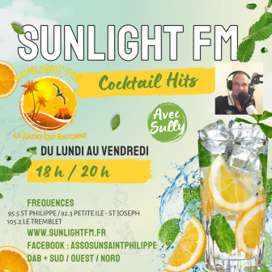
Retrouvez Sully pour des émissions variées, musicales et culturelles, qui reflètent l'identité réunionnaise.
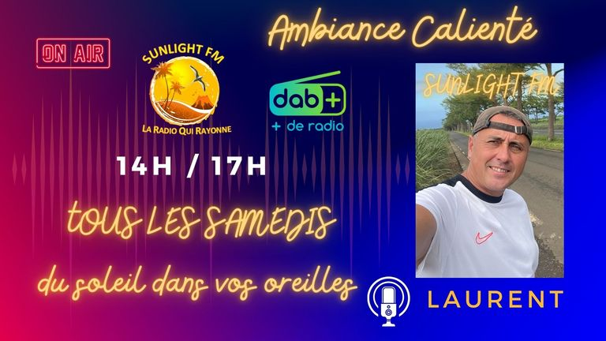
Laurent prend les commandes pour votre après-midi : musique, bonne humeur et rendez-vous incontournables.
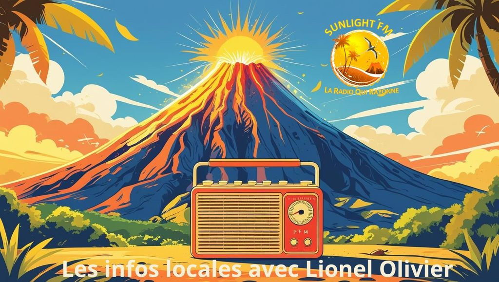
Toute l'actualité de La Réunion en direct avec Lionel Olivier, journaliste de proximité au service de l'information locale.
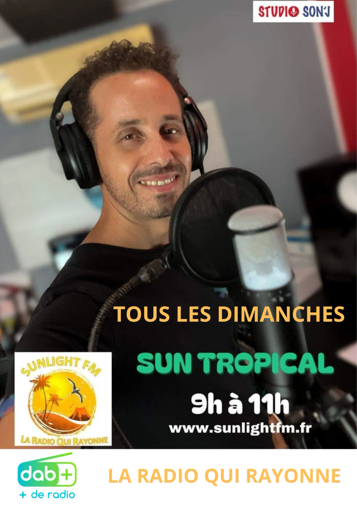
Plongez dans les rythmes tropicaux avec Sun Tropical, la sélection musicale qui fait voyager entre les îles.
Téléchargez l'application Sunlight FM sur Google Play pour écouter la radio partout et rester connecté à vos programmes préférés, où que vous soyez.
Scannez ce QR code avec votre smartphone pour télécharger l'application Sunlight FM directement sur Google Play.
Découvrez les photos exclusives de nos événements, de nos animateurs et des moments forts qui font l'âme de Sunlight FM. Une fenêtre ouverte sur la vie de votre radio.

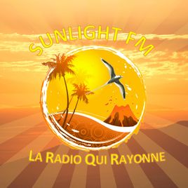
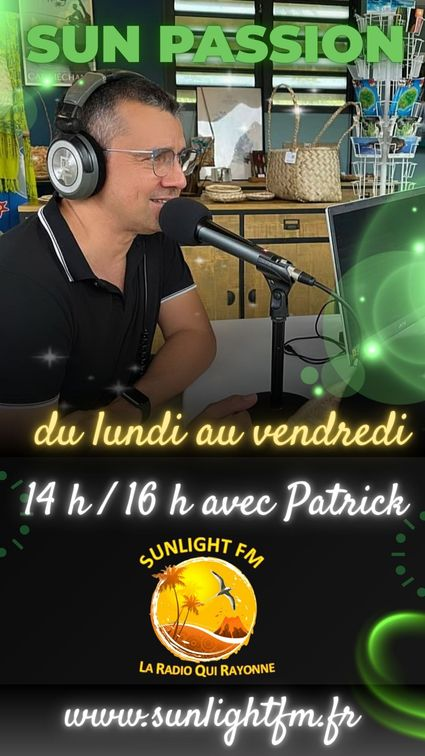
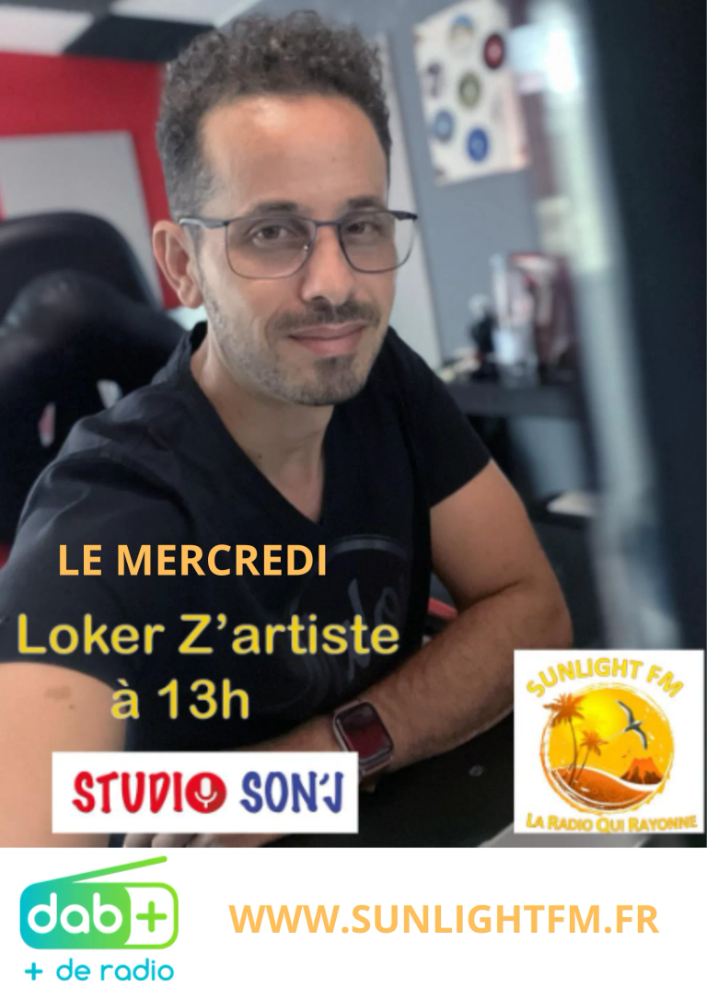
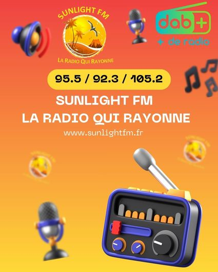
Découvrez les partenaires qui soutiennent Sunlight FM et contribuent à faire rayonner la radio sur toute l'île de La Réunion. Ensemble, nous faisons vivre la radio locale.
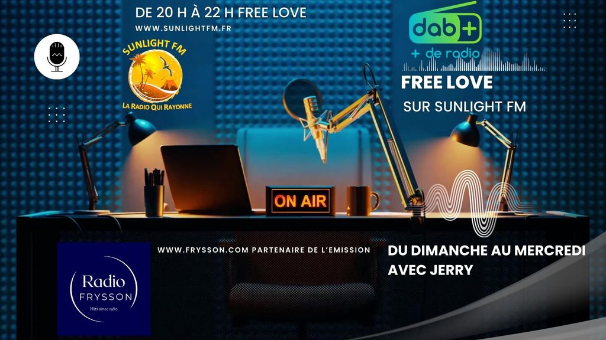
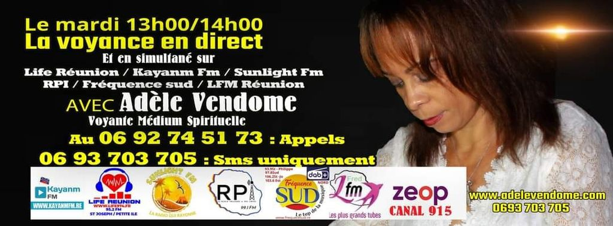